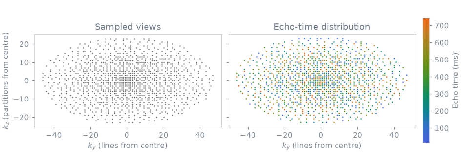
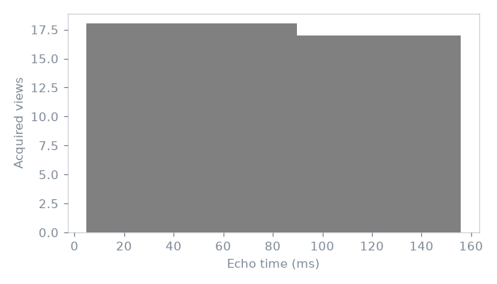

Note
Go to the end to download the full example code.
Shuffled echo-resolved 3D FSE#
Shuffled 3D FSE uses the same optimized refocusing train as conventional FSE, but distributes echo times over a variable-density Poisson-disc sampling pattern. The resulting incoherent contrast distribution can support echo-resolved or subspace reconstruction; no reconstruction is performed here.
from pypulseqpp import sequences
Fse3DApp = sequences.fse3D_sequence.Fse3DApp
P = {
"n_x": 80,
"n_y": 48,
"n_z": 24,
"fov_x": 0.20,
"fov_y": 0.20,
"fov_z": 0.12,
"etl": 16,
"te": 48e-3,
"tr": 0.5,
"ry": 2,
"rz": 2,
"n_acs_y": 8,
"n_acs_z": 6,
"n_dummy": 0,
"ordering": "shuffling",
"flip_modulation": "optimized",
"wave_amplitude": 0.0,
}
app = Fse3DApp(**P)
seq = app.design()
Variable-density sampling#
A fully sampled calibration region is embedded in a variable-density Poisson-disc mask. The remaining samples are distributed across echo indices rather than assigned deterministically by k-space radius.
labels = seq.evaluate_labels(evolution="adc")
echo = np.asarray(labels["ECO"])
ky = np.asarray(labels["LIN"]) - P["n_y"] // 2
kz = np.asarray(labels["PAR"]) - P["n_z"] // 2
te_ms = (echo + 1) * app.fse.esp * 1e3

Echo-time distribution#
Each echo index occurs throughout the sampled extent. Contrast evolution is consequently not locked to a radial k-space band, which is the sampling condition used by echo-resolved and subspace FSE reconstructions.
fig, ax = plt.subplots(figsize=(5.6, 3.2))
ax.hist(
te_ms,
bins=np.arange(
te_ms.min() - 0.5 * app.fse.esp * 1e3,
te_ms.max() + app.fse.esp * 1e3,
app.fse.esp * 1e3,
),
color="0.25",
)
ax.set(xlabel="Echo time (ms)", ylabel="Acquired views")
fig.tight_layout()

Total running time of the script: (0 minutes 0.439 seconds)